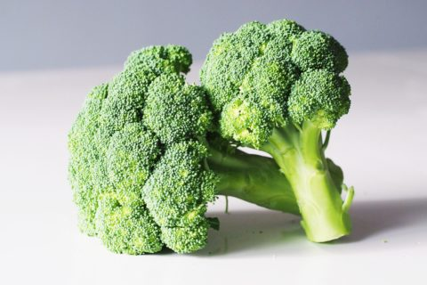
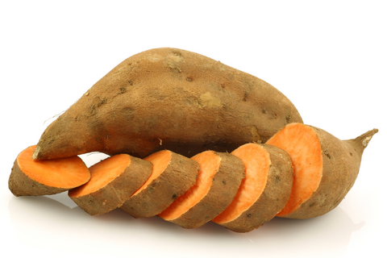

Instrukcje pomagające skomponować idealną warzywną dietę dla Twojego prosiaczka. Zapoznaj się z nimi dokładnie i w razie wątpliwości zasięgnij opinii weterynarza, aby Twoje zwierzątko mogło cieszyć się zdrowym, długim i szczęśliwym życiem!
Jaka ilość warzyw będzie odpowiednia dla mojej świnki?
Warzywa są w diecie świnki morskiej doskonałym źródłem kluczowych mikroelementów takich jak witaminy i minerały. Są również świetnym sposobem aby wprowadzić do jadłospisu świnki trochę różnorodności. Warzywa powinny stanowić ok. 10% całkowitej objętości jedzenia spożywanego przez gryzonie (najwięcej bo ok. 70% powinno stanowić siano a resztę sucha karma i owoce). Zaleca się podawanie połowy kubka warzyw i zieleniny na każde 0,5kg wagi ciała Twojego zwierzaka. Zielone, jadalne części roślin powinny stanowić znaczną większczość podawanych warzyw, resztę będą stanowiły warzywa korzeniowe. Czyli świnka ważąca 1 kg powinna dostawać prawie cały kubek zieleniny i dodatkowe 2 łyżki kuchanne warzyw korzennych.
Dlaczego zbilansowana dieta jest taka ważna?
Z pewnością chcemy zabezpieczyć naszych małych przyjaciół przed różnego typu chorobami układu pokarmowego i moczowego, które mogą wynikać z niedoborów lub nadmiaru różnych substancji. Odpowiednia dieta ma odżywiać i polepszać stan skóry, futra, zębów oraz zwiększać energię i wewnętrzne zdrowie naszego futrzaka.
Chociaż wymienione w tym artykule warzywa ogólnie są uznawane za odpowiednią opcją dla naszego zwierzaka, zawsze warto jest dopasować dietę do jego indywidualnych potrzeb. Dla przykładu warzywa bogate w wapń i kwas szczawiowy powinny być znacznie ograniczone lub całkowicie odstawione jeśli nasza świnka miała kiedyś problemy z kamieniami nerkowymi. Tak samo bardzo kaloryczne warzywa bogate w cukier nie powinny być podawane świnkom, które mają problem z nadmierną wagą ciała.
Tak wiele możliwości!
Różnorodność w diecie jest bardzo ważna w życiu, również dla naszych pupili. Oczywiście powinniśmy stopniowo przedstawiać nowe smakołyki naszym świnkom aby nie przeciążyć ich układu pokarmowego. Szybkie zmiany mogą sprawić, że zwierzak pochoruje się i nie będzie chciał już więcej spróbować danego warzywa.
Kolejnym problemem może być brak zainteresowania świnki nowym pożywieniem. Niektóre zwierzątka są ciekawskie i odważne, a inne bardzo podejrzliwe i w ciemno nie uwierzą, że ten nowy przedmiot koło ich pyszczka jest jadalny. Warto wtedy pociąć warzywo na malutkie kawałeczki i położyć obok znanego im jedzenia. Zachowując powyższe zasady ważne jest, aby karmić naszego zwierzaka różnymi typami warzyw. Zdecydowanie ubogaci to jego świat i sprawi, że będzie on ciągle zainteresowany swoją dietą. Podczas gdy wiele roślin zawiera podobne składniki odżywcze, zawsze możemy eksperymentować z ich aromatem, smakiem i teksturą. Śmiało sprawdzajmy zatem co nasze świnki lubią najbardziej!
Tabela uwzględniająca składniki odżywcze poszczególnych warzyw.
Komentarze do tabelki:
- podane wartości składników odżywczych odnoszą się do 100g produktu (wyjątki są oznaczone)
- stosuj produkty o niskiej zawartości wapnia (Ca), który może się nagromadzać powodując kamienie i osad w przewodzie moczowym
- stosuj produkty o niskiej zawartości kwasu szczawiowego, który może łączyć się z wapniem tworząc osad złożony z kryształów szczawianu wapnia
- staraj się zachować równowagę pomiędzy wapniem i fosforem (Ca:P), utzymując całkowity stosunek pomiędzy 1,5:1 a 2:1
- unikaj podawania dużych porcji produktów bogatych w cukier i skrobie
- produkty podajemy w stanie surowym
- kliknij na nagłówki kolumny aby posortować wartości od najmniejszej do największej
- najedź kursorem na obrazek produktu aby powiększyć
Produkty podzielono na następujące grupy:
| Nazwa grupy | Częstotliwość podawania |
|---|---|
| A | podawaj codziennie |
| B | podawaj często, 2-4 razy na tydzień |
| C | podawaj okazjonalnie. 1-2 razy na tydzień |
| D | podawaj rzadko, 1-2 razy na miesiąc |
| Zdjęcie | Warzywo | Kalorie | P (g) |
S (g) | Ca (mg) | P (mg) | Wit. C (mg) | Wit. A (mg) | Kwas szczawiowy (mg) | Stosunek Ca:P | Grupa | Komentarz |
|---|---|---|---|---|---|---|---|---|---|---|---|---|
 |
Karczoch | 47 | 3,27 | 0 | 44 | 90 | 11,7 | 0 | - | 0,5:1 | B | - |
| Szparagi | 20 | 2,20 | 1,88 | 24 | 52 | 5,6 | 38 | 130 | 0,5:1 | C | - | |
| Fasola | 31 | 1,82 | 1,40 | 37 | 38 | 16,3 | 35 | 360 | 1,0:1 | B | 1-2 strączki na świnke | |
 |
Burak | 43 | 1,61 | 6,76 | 16 | 40 | 4,9 | 2 | - | 0,4:1 | C | zalecane podawanie ciężarnym i karmiącym samiczkom, pomocny w leczeniu anemii,pobudza apetyt, przydatny dla niejadków i świnek anorektycznych |
 |
Brokuł | 34 | 2,82 | 1,70 | 47 | 66 | 89,2 | 33 | 190 | 0,7:1 | C | bardzo gazotwórczy, tylko małe ilości |
 |
Brukselka | 43 | 3,38 | 2,20 | 42 | 69 | 85 | 38 | 360 | 0,6:1 | C | bardzo gazotwórcza, tylko małe ilości |
 |
Kapusta biała | 24 | 1,44 | 3,58 | 47 | 23 | 32,2 | 9 | 100 | 2,0:1 | B | bardzo gazotwórcza, tylko małe ilości |
| Kapusta czerwona | 31 | 1,43 | 3,91 | 45 | 30 | 57 | 56 | 100 | 1,5:1 | B | bardzo gazotwórcza, tylko małe ilości | |
| Kapusta włoska | 27 | 2,00 | 2,27 | 35 | 42 | 31 | 50 | 100 | 0,8:1 | B | bardzo gazotwórcza, tylko małe ilości | |
| Kapusta chińska | 13 | 1,50 | 1,18 | 105 | 37 | 45 | 223 | - | 2,8:1 | C | bardzo gazotwórcza, tylko małe ilości | |
 |
Marchew (młoda) | 1 | 0,06 | 0,48 | 3 | 3 | 0,8 | 69 | 50 | 1,0:1 | A | nie powoduje wzdęć, zaparć ani biegunek, poprawia trawienie, wspomaga leczenie biegunki. |
 |
Kalafior | 25 | 1,98 | 2,40 | 22 | 44 | 46,4 | 1 | 150 | 0,5:1 | C | bardzo gazotwórcza, tylko małe ilości |
 |
Seler naciowy | 14 | 0,69 | 1,83 | 40 | 24 | 3,1 | 22 | 190 | 1,7:1 | B | potnij w kawałeczki, usuń włókna |
 |
Kukurydza | 77 | 2,90 | 2,90 | 2 | 80 | 6,1 | 9 | 009 | 0,3:1 | C | mogą być karmione codziennie łuskami i jedwabiem kukurydzy |
| Ogórek | 15 | 0,65 | 1,67 | 16 | 24 | 2,8 | 5 | 020 | 0,7:1 | B | świetny przysmak przy oswajaniu świnek, „nawadniacz" dla niepijących świnek | |
| Groszek | 42 | 2,80 | 4,00 | 43 | 53 | 60 | 54 | 050 | 0,8:1 | B | 1-2 strączki na świnkę | |
 |
Papryka zielona | 20 | 0,86 | 2,40 | 10 | 20 | 80,4 | 18 | 040 | 0,5:1 | A | warzywo najbogatsze w witaminę C - świetny zamiennik dla sztucznej witaminy w płynie |
 |
Papryka żółta | 27 | 1,00 | - | 11 | 24 | 183 | 10 | 0,40 | 0,5:1 | A | warzywo najbogatsze w witaminę C - świetny zamiennik dla sztucznej witaminy w płynie |
 |
Papryka czerwona | 26 | 0,99 | 4,20 | 7 | 26 | 190 | 157 | 040 | 0,3:1 | B | oprócz wit. C dodatkowo wysoka zawartość cukru |
| Dynia | 26 | 1,00 | 1,36 | 21 | 44 | 9 | 369 | - | 0,5:1 | C | pestki dyni tuczą, ale pomagają zabić pasożyty w jelitach, reguluje wydzielanie hormonów i wit.D | |
| Cykoria sałatowa | 23 | 1,43 | 0,60 | 19 | 40 | 8 | 1 | - | 0,5:1 | A | - | |
 |
Rzodkiewka | 16 | 0,68 | 2,12 | 25 | 20 | 14,8 | 0 | 480 | 1,3:1 | B | wysoka zawartość szczawianów, ma lekko piekący smak, zwiększa apetyt oraz poprawia pamięć |
 |
Batat | 86 | 1,57 | 4,18 | 30 | 47 | 2,4 | 709 | 240 | 0,6:1 | D | wysoka zawartość cukru i szczawianów |
 |
Pomidor | 18 | 0,88 | 2,63 | 10 | 24 | 12,7 | 42 | - | 0,4:1 | B | nadmiar potasu, którego jest dużo w pomidorach, może zaburzać pracę nerek i serca, szypułki i liście trujące dla świnek. |
 |
Rzepa | 28 | 0,90 | 3,80 | 30 | 27 | 21 | 0 | 210 | 1,1:1 | C | wysoka zawartość cukru i szczawianów, spora ilość wit. C, ma lekko piekący smak, |
 |
Cukinia | 16 | 1,21 | 1,73 | 15 | 38 | 17 | 10 | 020 | 0,4:1 | A | - |
Czego kategorycznie nie powinna jeść świnka morska?
- WSZYSTKIEGO CZEGO NIE JESTEŚ PEWIEN!
- czosnek (oraz wszystko z rodziny czosnkowatych: cebula, szczypior itp.)
- sałata lodowa
- awokado
- ziemniak
- rabarbar
- orzechy